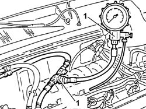
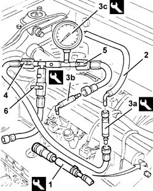
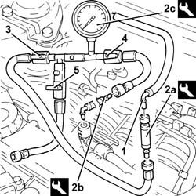

0510C10 fuel system - check delivery pressure
- Path
- Procedures > 05 DIAGNOSTICS > 0510 VARIOUS CONTROLS > 0510C check systems > 0510C10 fuel system - check delivery pressure
- Kind
- repair procedure (removal / refitting; the operation number is the code)
- Applies to
- engines: 1.6 TS , 1.8 TS, 2.0 JTS, 2.0 JTS; all production periods
- Interactive page
- https://sloeber94.github.io/elrnDB-a156/en/#/3237428
Applies to: engines: 1.6 TS ; all production periods
Disconnect the fuel supply pipe from the distribution manifold.
1. Connect a pressure gauge between the manifold and the disconnected pipe using a 'T' adaptor.
Disconnect the vacuum intake pipe from the fuel pressure regulator to prevent uneven idling leading to irregular readings.
Start the engine and leave to idle. Check that the fuel pressure is within the specified range.
 | Measurement | Value | |
|---|---|---|---|
- | Idle speed fuel pressure (bar) | 2.3 - 2.7 |

Applies to: engines: 1.6 TS ; all production periods
Re-connect the vacuum intake pipe to the regulator. Check that the fuel pressure drops by ~ 0.5 bar and then rises again when the throttle valve is opened. If this does not occur, check for leaks in the vacuum pipe.
Keep the vacuum intake pipe connected to the regulator and leave the engine to idle. Pinch the fuel outlet pipe from the distribution manifold so that the pressure rises to ~ 4 bar (do not allow the pressure to exceed this value).
Disconnect the pressure gauge and the 'T' adaptor.
Connect the fuel inlet pipe to the distribution manifold.
Applies to: engines: 1.6 TS ; all production periods
1. Connect the equipment to the distribution manifold bleed valve and discharge the fuel pressure.
 | Name | Country |
|---|---|---|
1 | Rapid connector | 1.870.684.000 |
2. Disconnect the fuel supply pipe from the distribution manifold.
3. Fit the tools (3a) and (3b) on the tool (3c).
| Name | Country |
|---|---|---|
3a | Connectors kit | 1.860.955.003 |
| Name | Country |
|---|---|---|
3b | Connectors kit | 1.860.955.001 |
| Name | Country |
|---|---|---|
3c | Pressure gauge | 1.860.955.000 |
Connect the newly-prepared tool to the fuel supply pipe and distribution manifold.
4. Open the ball valve.
5. Open the ball valve.
6. Close the ball valve.
Start the engine and leave to idle. Check that the fuel pressure is within the specified range.
| Measurement | Value | |
|---|---|---|---|
- | Idle speed fuel pressure (bar) | 3.3 - 3.7 |
Switch off the engine.

Applies to: engines: 1.6 TS ; all production periods
Disconnect the test equipment from the distribution manifold and fuel supply pipe.
Connect the fuel supply pipe to the fuel manifold.
Applies to: engines: 2.0 JTS, 2.0 JTS; all production periods
PROCEED WITH DRAINING THE HIGH PRESSURE SYSTEM FOLLOWING THE INSTRUCTIONS GIVEN BELOW.
Start engine
Keep the engine idling for 2 minutes.
Detach the fuel pump relay.
Wait until the engine cuts out.
Try and start up the engine: if the engine starts within 10 seconds, wait until it cuts out, then try and start it again; if the engine does not start within 10 seconds, continue for another 5 seconds.
Wait until the engine cools down.
Proceed with removal 1016A40 ignition coil cover on cylinder head- r+r .
1. Disconnect the rapid attachment for the fuel supply pipe.
2. Fit the tools (2a) and (2b) on tool (2c).
| Name | Country |
|---|---|---|
2a | Connectors kit | 1.860.955.003 |
| Name | Country |
|---|---|---|
2b | Connectors kit | 1.860.955.001 |
| Name | Country |
|---|---|---|
2c | Pressure gauge | 1.860.955.000 |
Connect the tool constructed to the fuel supply pipe.
3. Open the ball valve.
4. Open the ball valve.
5. Close the ball valve.
Start the engine and, at idle speed, check that the low pressure circuit fuel supply pressure is within the specified values.
| Measurement | Value | |
|---|---|---|---|
- | Idle fuel pressure (bar) | 4.5 |
Switch off the engine.

Applies to: engines: 2.0 JTS, 2.0 JTS; all production periods
Repeat the high pressure fuel system draining procedure following the instructions described previously.
Disconnect the tools and remove them.
Connect the rapid attachment for the fuel supply pipe.
Proceed with refitting 1016A40 ignition coil cover on cylinder head- r+r .
Topics linked from this page (1)
Topics that link to this page (16)
- B10 ENGINE DOES NOT START / UNDER NO CIRCUMSTANCES
- B11 ENGINE STARTS WITH DIFFICULTY' / WHEN WARM
- B12 ENGINE STARTS WITH DIFFICULTY' / WHEN COLD
- B13 ENGINE STARTS WITH DIFFICULTY'
- B20 ENGINE STARTS, AND CUTS OUT STRAIGHT AWAY
- D01 ENGINE NOT RUNNING SMOOTHLY / (HESISTANT)
- D03 ENGINE NOT RUNNING SMOOTHLY / (IRREGULAR OPERATION)
- D05 ENGINE DOES NOT PRODUCE BEST PERFORMANCE
- D10 ENGINE IDLE IRREGULAR
- D21 ENGINE CUTS OUT WHILST DRIVING
- W01 HIGH CO EMISSIONS
- W02 CO EMISSIONS LOW, NOx EMISSIONS HIGH
- W10 BLACK EXHAUST FUMES
- X01 EXCESSIVE FUEL CONSUMPTION
- Z53 MISFIRE ERROR
- Z54 MISFIRE ERROR IN ONE CYLINDER